Change fonts CSV
A script for InDesign. Written and tested in InDesign 2022. It can be used as a regular script against the current document, or you can run it from the batch processor to replace fonts in all files, say, in a selected folder. Here is the latest version of the script and here are the sample files used in the example below.
There are two scripts in the package and a sample CSV file that you can use as a starting point for making your list of fonts for replacement:
- Change fonts CSV.jsx
- Set parameters.jsx
- Change fonts list.csv
With InDesign version 2023 inevitably approaching — in which Type 1 fonts won’t be supported anymore — this script may come in handy by replacing all fonts according to the list in a CSV file.
You can prepare a list of the fonts to be changed in Excel or Numbers, and save it as a CSV file which will be used by the script. The left column is 'Find this', the right one is 'Change to'.
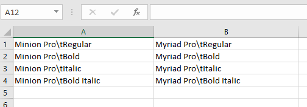
If you use it as a regular script or run it from the batch processor without an arguments file, you should save it as a CSV file using the Change fonts list.csv name in the same folder where the script is located. If you use it as an arguments file, the file name and location don’t matter.
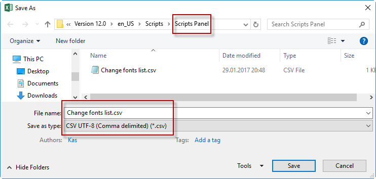
Of course, you can do without Excel and edit the CSV file in a plain text editor like Notepad (PC) or TextEdit (Mac). In this case the left and right elements — find this — change to that — should be delimited by semicolons.
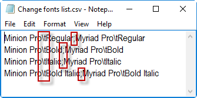
The family name and font style should be separated by \t (which means a tab).
If you have more than one version of the same font (family name), — for example, True Type and Open Type — you can indicate the required version like so:
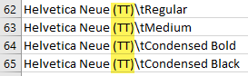
Unfortunately, as you probably know, there’s no way to change fonts by a script as you can do manually in InDesign via the Type > Find/Replace Font dialog box since this feature is unavailable to scripting so I had to find a workaround for replacing fonts in four steps:
- change the fonts defined in all the paragraph styles
- change the fonts defined in all the character styles
- change the fonts applied as local formatting in the same way as the 'find this font and change to that font' feature works in the Find-Change Text dialog box (Warning! This feature is buggy in InDesign)
- change fonts by text style ranges (a scripting term meaning a piece of text where different formatting is applied)
Changing fonts applied in local formatting is achieved via the Find-Change and/or Text style ranges options. However, as I already mentioned, the Find-Change feature is buggy and may lead to unexpected results so I’d rather keep it off, turning on text style ranges like on the screenshot below. Note that the Find-Change option may change the font to a non-existent style if it is missing in the family thus resulting in a missing font. Anyway, feel free to experiment with both settings turning them on separately or together to find out what works better for you.
For example, changing a font via the Text style ranges option works as expected:
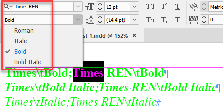
But via Find — change results in missing fonts, though they are installed and available in InDesign as you can see in the previous screenshot.
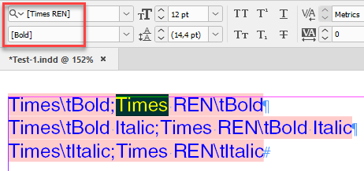
Set parameters.jsx — as the name suggests — is for setting parameters. When you run it, nothing happens to the documents opened in InDesign (if any), but a dialog box appears — reflecting the abovementioned four-step approach — where you can choose where and how to change fonts. When you hit OK, the settings are saved within InDesign and used by the main script. Also, this dialog box has the Only missing fonts check box. When it’s on, only missing fonts will be replaced.
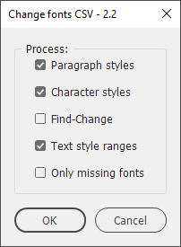
When you run the script from the batch processor, you can choose a CSV file in the arguments file section. You can select a CSV file as an arguments file in the batch processor version 4.8 or above: make sure to update it. If no arguments file is used, the script looks for the Change fonts list.csv file in the same folder where the script is located.
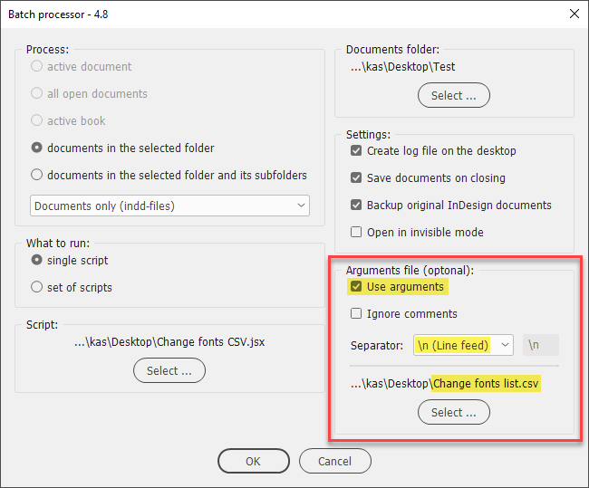
In my example the script changes Minion Pro - Bold, Italic and Bold Italic to Myriad Pro (Letter Gothic Std is left unchanged).
Before
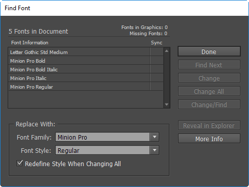
After
If the Create log file on the desktop check box is on, the script logs information about the number of styles and instances of local formatting where the fonts were changed in each document.
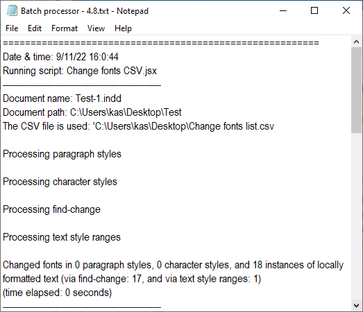
There is a variable in the script called debugMode which is set to false by default.
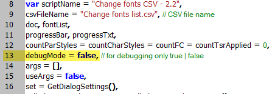
If you set it to true, the script will apply the following colors to changed fonts which helps me a lot for debugging purposes:
Green — successfully replaced via Text style ranges
Blue — successfully replaced via Find — change
Red — an error occurred via Text style ranges (never happened to me so far).
This may be useful if you want to make the changed fonts visually stand out. Later you can delete the temporary colors replacing them with Black.
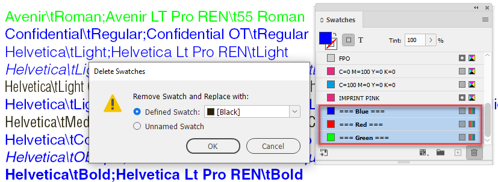
Important note
In my practice, I encountered a problem when replacing fonts with a script in old (converted) documents: the fonts failed to change for some reason. The solution was simple: export files to IDML and back to INDD format. That’s why I added support for IDML files in my Batch processor script's new version — 5.
If you found my scripts useful and want me to develop more free scripts, consider supporting me by donating via PayPal directly to my e-mail: askoldich [at] yahoo [dot] com. (Due to PayPal´s restrictions for Ukraine, I can´t have a Donate button on my site.)
Click here to download the script.